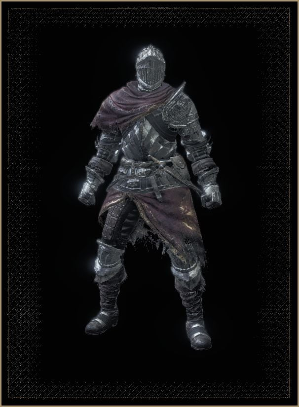

Resumo: A historia de Dark souls 3
É chamado Lothric. Onde as terras transitórias dos Lordes de Cinder convergem. Ao se aventurarem para o norte, os peregrinos descobrem a verdade das antigas palavras. "O fogo se apaga, e os lordes ficam sem tronos." Quando o elo do fogo é ameaçado, o sino toca, desenterrando os antigos Lordes de Cinder de seus túmulos. Aldrich, Santo das Profundezas. Legião de mortos-vivos de Farron, O Observadores do Abismo. E o senhor recluso da Capital Profanada, Yhorm, o Gigante. Só que, na verdade... Os Lordes abandonarão seus tronos, e os Inacesos se erguerão. Mortos-vivos amaldiçoados e sem nome, impróprios até para serem cinzas. E assim é. Aquelas cinzas buscam brasas.
Resumo: Armas
As armas em Dark Souls 3 estão listadas nesta página. Os jogadores podem equipar até 3 nos slots para cada mão. Ao desenvolver uma construção, o jogador deve tentar encontrar a arma que mistura a quantidade certa de dano, bônus e conjunto de movimentos. Temos no katanas, Espadas longas, Arcos, Cajados para magias, Foices e muitas outras armas com suas habilidades e MovesSet diferentes

Resumo: Armaduras
Armadura em Dark Souls 3 fornece ao jogador proteção contra vários tipos de danos, resistência a Efeitos de status, e um aumento em Postura. Os jogadores podem misturar e combinar diferentes peças de armadura para fins funcionais e estéticos, permitindo uma aparência personalizada enquanto mantém defesas eficazes. Temos no jogo peitorais, elmos, perneiras e luvas cada uma tendo seu estilo e atributos diferentes.
